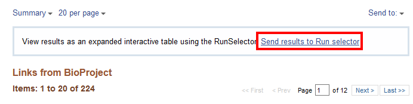
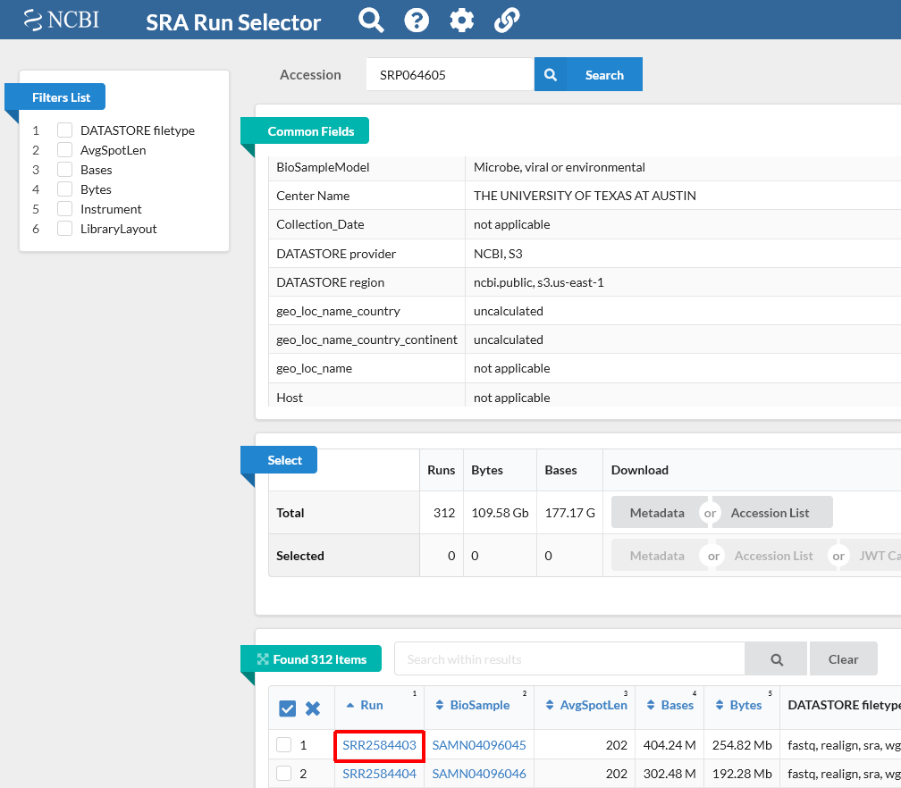
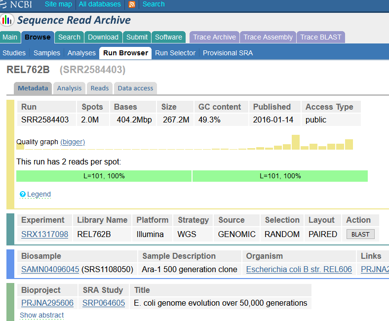
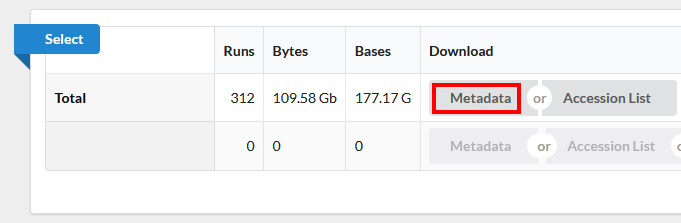

Examining Data on the NCBI SRA Database
Last updated on 2023-11-20 | Edit this page
Overview
Questions
- How do I access public sequencing data?
Objectives
- Be aware that public genomic data is available.
- Understand how to access and download this data.
In our experiments we usually think about generating our own sequencing data. However, almost all analyses use reference data, and you may want to use it to compare your results or annotate your data with publicly available data. You may also want to do a full project or set of analyses using publicly available data. This data is a great, and essential, resource for genomic data analysis.
When you come to publish a paper including your sequencing data, most journals and funders require that you place your data on a public repository. Sharing your data makes it more likely that your work will be re-used and cited. It helps to prepare for this early!
There are many repositories for public data. Some model organisms or fields have specific databases, and there are ones for particular types of data. Two of the most comprehensive public repositories are provided by the National Center for Biotechnology Information (NCBI) and the European Bioinformatics Institute (EMBL-EBI). The NCBI’s Sequence Read Archive (SRA) is the database we will be using for this lesson, but the EMBL-EBI’s Nucleotide Archive (ENA) is also useful. The general processes are similar for any database.
Accessing the original archived data
The sequencing dataset (from Tenaillon, et al. 2016) adapted for this lesson was obtained from the NCBI Sequence Read Archive, which is a large (~27 petabasepairs/2.7 x 10^16 basepairs as of April 2019) repository for next-generation sequence data. Like many NCBI databases, it is complex and mastering its use is greater than the scope of this lesson. Very often there will be a direct link (perhaps in the supplemental information) to where the SRA dataset can be found. We are only using a small part of these data, so a direct link cannot be found. If you have time, go through the following detailed description of finding the data we are using today (otherwise skip to the next section).
Locate the Run Selector Table for the Lenski Dataset on the SRA
See the figures below for how information about data access is provided within the original paper.
The above image shows the title of the study, as well as the authors.
The excerpt from the paper below includes information on how to locate the sequence data. In this case, the text appears just before the reference section.
Author Information All sequencing data sets are available in the NCBI BioProject database under accession number PRJNA294072. The breseq analysis pipeline is available at GitHub (http://github.com/barricklab/breseq). Other analysis scripts are available at the Dryad Digital Repository (http://dx.doi.org/10.5061/dryad.6226d). R.E.L. will make strains available to qualified recipients, subject to a material transfer agreement. Reprints and permissions information is available at www.nature.com/reprints. The authors declare no competing financial interests. Readers are welcome to comment on the online version of the paper. Correspondence and requests for materials should be addressed to R.E.L. (lenski at msu.edu)
At the beginning of this workshop we gave you experimental information about these data. This lesson uses a subset of SRA files, from a small subproject of the BioProject database “PRJNA294072”. To find these data you can follow the instructions below:
Notice that the paper references “PRJNA294072” as a “BioProject” at NCBI. If you go to the NCBI website and search for “PRJNA294072” you will be shown a link to the “Long-Term Evolution Experiment with E. coli” BioProject. Here is the link to that database: https://www.ncbi.nlm.nih.gov/bioproject/?term=PRJNA294072.
Once on the BioProject page, scroll down to the table under “This project encompasses the following 15 sub-projects:”.
In this table, select subproject “PRJNA295606 SRA or Trace Escherichia coli B str. REL606 E. coli genome evolution over 50,000 generations (The University of Texas at…)”.
This will take you to a page with the subproject description, and a table “Project Data” that has a link to the 224 SRA files for this subproject.
Click on the number “224” next to “SRA Experiments” and it will take you to the SRA page for this subproject. 
For a more organized table, select “Send results to Run selector”. This takes you to the Run Selector page for BioProject PRJNA295606 (the BioProject number for the experiment SRP064605) that is used in the next section.
Download the Lenski SRA data from the SRA Run Selector Table
Make sure you access the Tenaillon dataset from the provided link: https://trace.ncbi.nlm.nih.gov/Traces/study/?acc=SRP064605. This is NCBI’s cloud-based SRA interface. You will be presented with a page for the overall SRA accession SRP064605 - this is a collection of all the experimental data.
Notice on this page there are three sections. “Common Fields” “Select”, and “Found 312 Items”. Within “Found 312 Items”, click on the first Run Number (Column “Run” Row “1”). 
This will take you to a page that is a run browser. Take a few minutes to examine some of the descriptions on the page. 
Use the browser’s back button to go back to the ‘previous page’. As shown in the figure below, the second section of the page (“Select”) has the Total row showing you the current number of “Runs”, “Bytes”, and “Bases” in the dataset to date. On 2022-12-06 there were 312 runs, 109.58 Gb data, and 177.17 Gbases of data. 
Click on the “Metadata” button to download the data for this lesson. The filename is “SraRunTable.txt” and save it on your computer Desktop. This text-based file is actually a “comma-delimited” file, so you should rename the file to “SraRunTable.csv” for your spreadsheet software to open it correctly.
You should now have a file called
SraRunTable.csv on your desktop.
Now you know that comma-separated (and tab-separated) files can be designated as “text” (
.txt) files but use either commas (or tabs) as delimiters, respectively. Sometimes you might need to use a text-editor (e.g. Notepad) to determine if a file suffixed with.txtis actually comma-delimited or tab-delimited.
Review the SraRunTable metadata in a spreadsheet program
Using your choice of spreadsheet program, open the
SraRunTable.csv file.
Discussion
Discuss with the person next to you:
- What strain of E. coli was used in this experiment?
- What was the sequencing platform used for this experiment?
- What samples in the experiment contain paired end sequencing data?
- What other kind of data is available?
- Why are you collecting this kind of information about your sequencing runs?
- Escherichia coli B str. REL606 shown under the “organism” column. This is a tricky question because the column labeled “strain” actually has sample names
- The Illumina sequencing platform was used shown in the column “Platform”. But notice they used multiple instrument types listed under “Instrument”
- Sort by LibraryLayout and the column “DATASTORE_filetype” shows that “realign,sra,wgmlst_sig” were used for paired-end data, while “fastq,sra” were used for all single-end reads. (Also notice the Illumina Genome Analyzer IIx was never used for paired-end sequencing)
- There are several columns including: megabases of sequence per sample, Assay type, BioSample Model, and more.
- These are examples of “metadata” that you should collect for sequencing projects that are sent to public databases.
After answering the questions, you should avoid saving any changes
you might have made to the metadata file. We do not want to make any
changes. If you were to save this file, make sure you save it as a
text-based .csv file format.
Downloading a few sequencing files: EMBL-EBI
The SRA does not support direct download of fastq files from its webpage. However, the European Nucleotide Archive does. Let’s see how we can get a download link to a file we are interested in.
Navigate to the ENA.
Near the top right, in the box next to “View”, type in
SRR2589044and click the “View” button.This will take you to a page with information about the data. Near the bottom you will have the option to download the data by FTP. You could download the
.fastqread files here, but we do not need to download these files right now and they are large. Alternatively, right click and copy the URL to save it for later.
We do not recommend downloading large numbers of sequencing files
this way. For that, the NCBI has made a software package called the
sra-toolkit. However, for a couple files, it’s often easier
to go through the ENA.
Where to learn more
About the Sequence Read Archive
- You can learn more about the SRA by reading the SRA Documentation
- The best way to transfer a large SRA dataset is by using the SRA Toolkit
References
Tenaillon O, Barrick JE, Ribeck N, Deatherage DE, Blanchard JL, Dasgupta A, Wu GC, Wielgoss S, Cruveiller S, Médigue C, Schneider D, Lenski RE. Tempo and mode of genome evolution in a 50,000-generation experiment (2016) Nature. 536(7615): 165–170. Paper, Supplemental materials Data on NCBI SRA: https://trace.ncbi.nlm.nih.gov/Traces/sra/?study=SRP064605 Data on EMBL-EBI ENA: https://www.ebi.ac.uk/ena/data/view/PRJNA295606